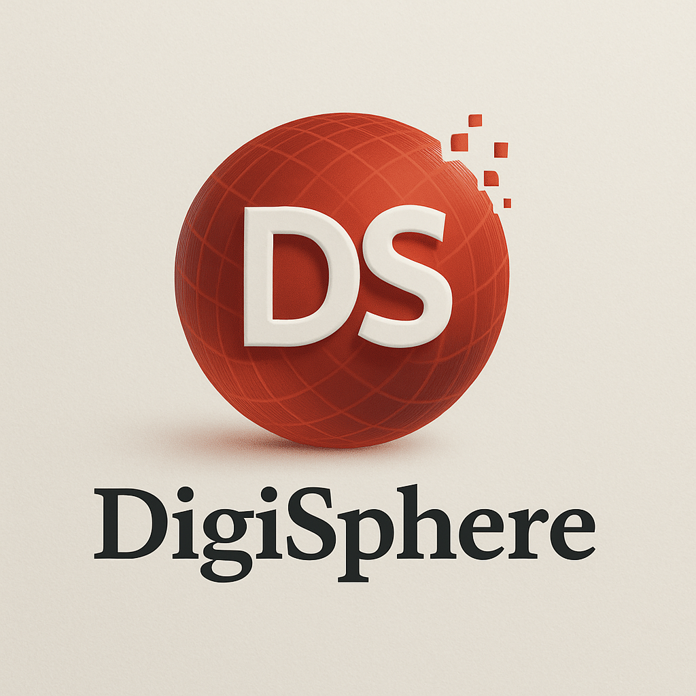
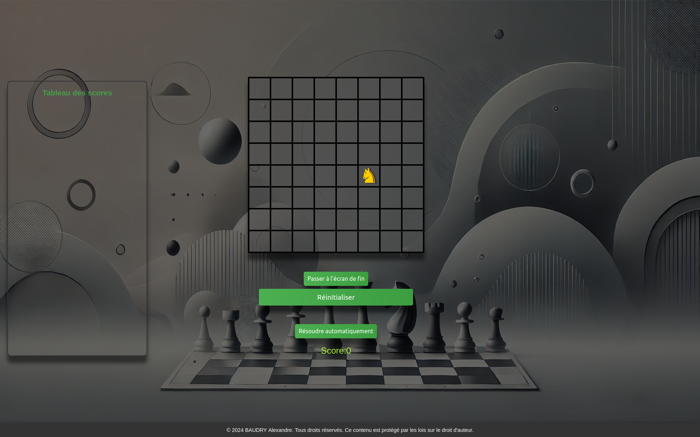
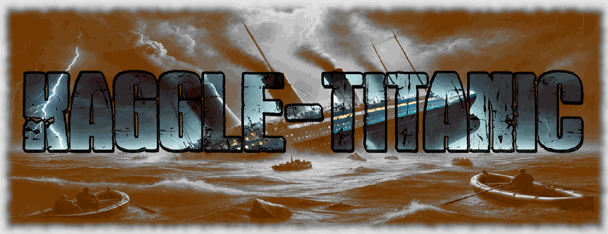
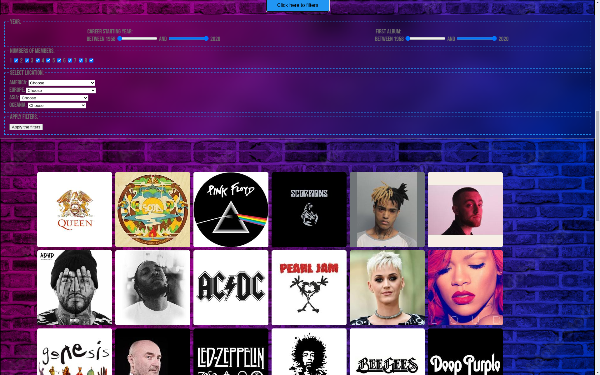

DigiSphere
Avec mes collaborateurs Luka
CHOUVILLE et Adrien
FERRAND, nous avons créé DigiSphere, un réseau
social conçu pour encourager des échanges authentiques, respectueux et enrichissants.
La plateforme valorise l’entraide, la liberté d’expression, et la construction d’une communauté
inclusive.
Notre ambition : faire de DigiSphere un espace où chacun peut s’exprimer librement tout en
contribuant positivement à une dynamique collective.

Cavalier D'euler
Cavalier d’Euler est une application web interactive qui illustre le célèbre problème mathématique du
parcours du cavalier, également connu sous le nom de problème du cavalier d’Euler. Ce projet permet
de visualiser et d'explorer les différentes solutions possibles de ce défi combinatoire sur un
échiquier.
Repository
Test du jeu

Kaggle-Titanic
Ce projet vise à prédire la survie des passagers du Titanic à l'aide de techniques d'apprentissage
automatique. À l'aide de Random Forest Classifier, nous prédisons si un passager a survécu ou non en
fonction de diverses caractéristiques telles que l'âge, le sexe, la classe et la taille de la
famille. Le modèle est entraîné et évalué par validation croisée, et le modèle final est utilisé
pour prédire la survie pour l'ensemble des données de test.
Repository

Groupie Tracker
Ce projet contient deux applications liées à la gestion d'artistes musicaux. Le premier projet,
Groupie Tracker, permet de consulter des informations sur des groupes et artistes via une interface
web. Le second projet, Groupie Tracker Filters, est une extension permettant de filtrer ces
informations selon divers critères. Ensemble, ces projets offrent une expérience d'exploration des
groupes et des concerts.
Repository

Smart road
Ce projet vise à créer un algorithme de gestion intelligente d'une intersection pour véhicules
autonomes,
remplaçant les feux tricolores. L'objectif est d'éviter les collisions et les embouteillages en
contrôlant
la vitesse et les trajectoires des véhicules à travers une intersection en croix, où chaque voie a
une direction prédéfinie.
Une simulation animée permet de tester le système.
Repository
Test du jeu

Make your game
Ce projet consiste à développer un jeu en JavaScript pur,
sans framework, en garantissant 60 FPS constants. Le jeu doit inclure un menu pause, un tableau de
scores
(temps, score, vies), et des contrôles clavier fluides. Inspiré de classiques comme Pac-Man ou
Tetris, il doit
être optimisé via les outils de développement pour éviter les saccades et maximiser les
performances.
Repository
Test du jeu

Visuel et tmp sites vitrines
Un outil permettant de visualiser les sites vitrines et prototypes. Le but est de créer une
bibliothèque de template de site vitrine,
pour permettre une visualisation rapide pour le client et de pouvoir télécharger le prototype,
facilitant la création de sites vitrines.